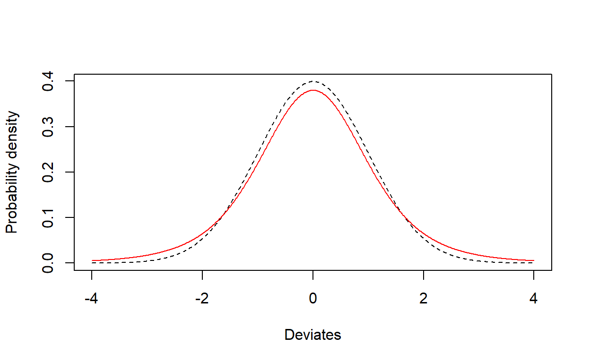
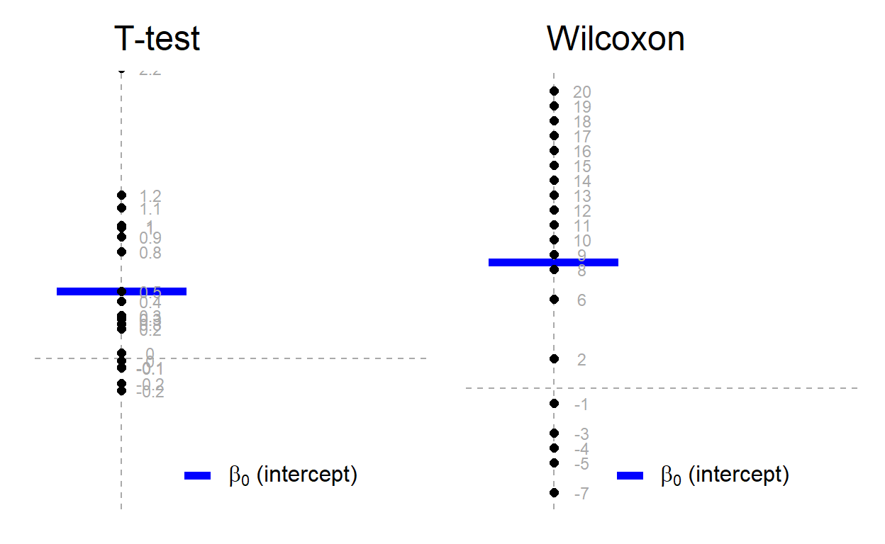
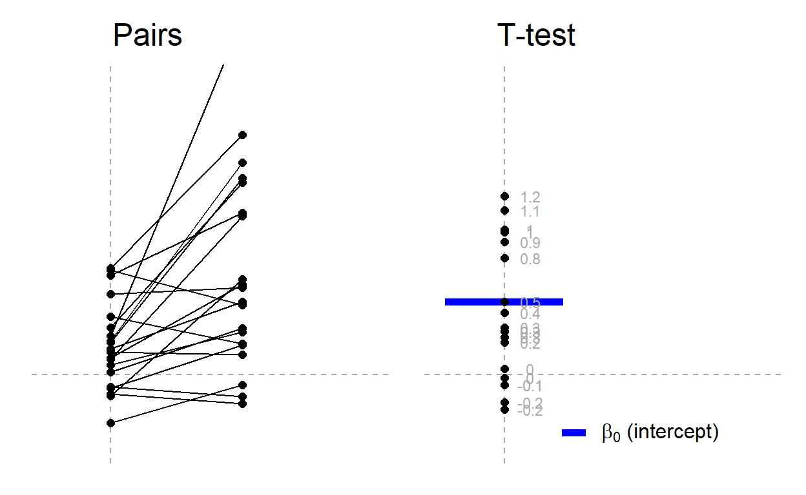
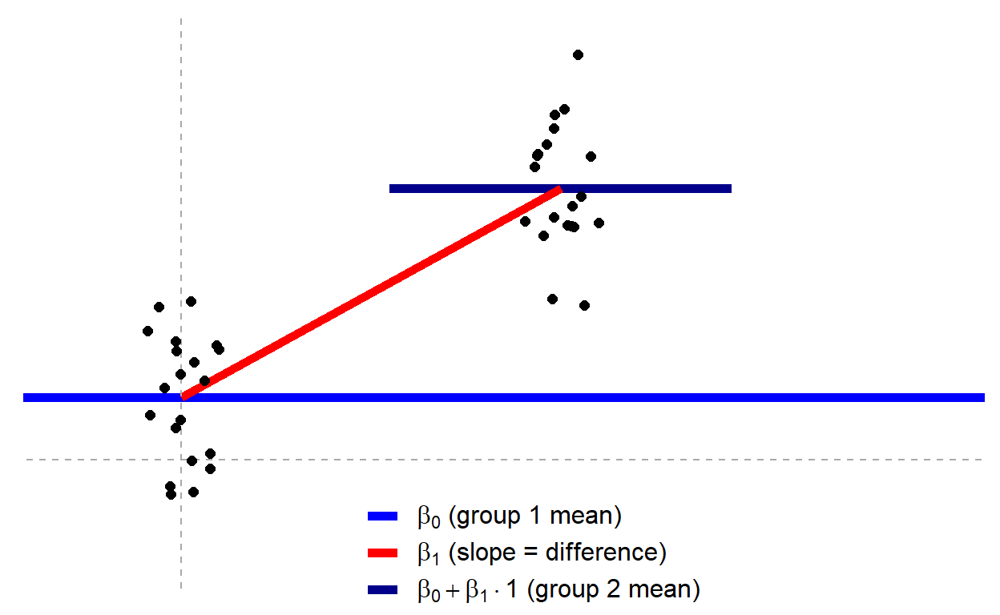
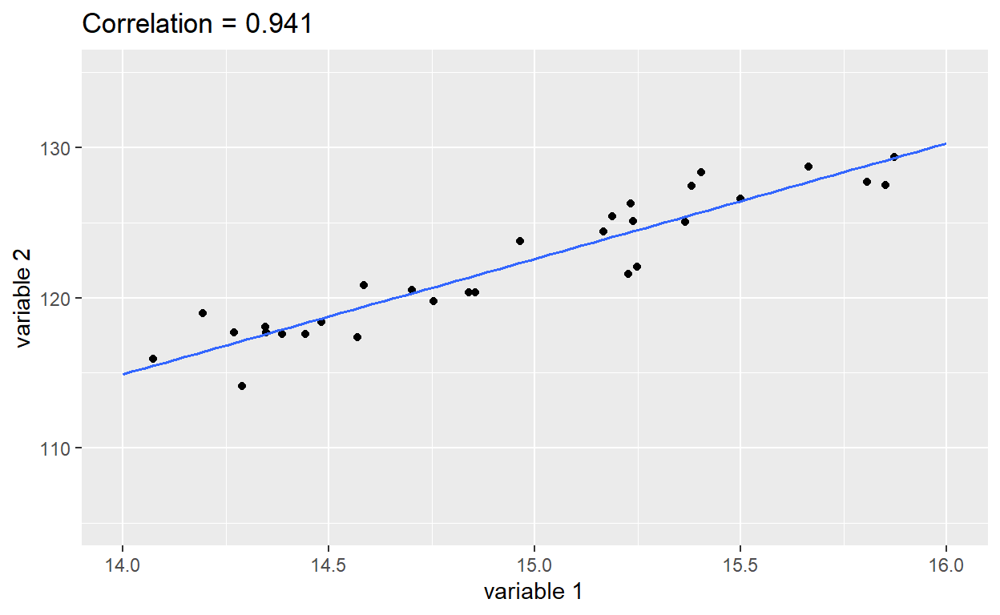
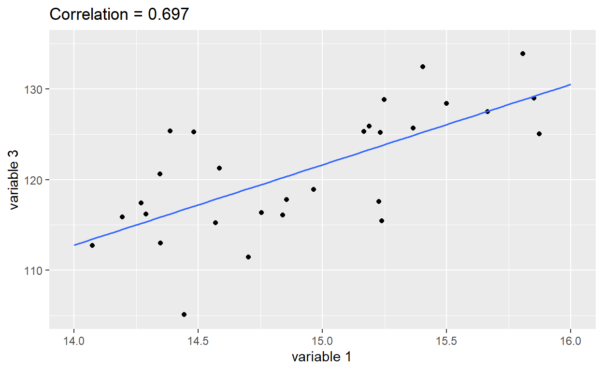

“Please do stats test XYZ”
When you are collecting data for other modules, or in your Stage 3
projects, you will often find that a member of staff is suggesting that
you analyse your data with a statistical test that you have not heard
of. However, many of these ‘standard’ statistical tests can be
considered to be linear models. If you find it less confusing to
consider them as forms of linear models, then feel free to stick to
that. If you prefer to use the built-in R commands for each test, then
that is fine also. What matters is the underlying
hypothesis that you are trying to test. This will determine the
exact structure of your lm or glm function, or
which built-in R command to use instead.
This website simply compares some of the commonly encounted statistical tests in their linear model format and their built-in format. You can find full details of this philosphy for teaching statistics at https://lindeloev.github.io/tests-as-linear/
Overall philsophy
The key thing to remember is that all these tests can be considered within the (generalised) linear model framework. Most can be considered as linear models, although there are a handful that need generalised linear models (GLMs). The overall philosophy is unchanged, i.e.:
\[Response = Explanatory + \epsilon\]
where
- Response is what you have measured, you assume it changes as a result of e.g a treatment you have applied
- Explanatory is typically your “treatment” in a laboratory experiment etc.
- \(\epsilon\) is the unexplained noise in your data
What can be a little confusing is that some of the simpler tests do not need you to explicitly include an explanatory variable. Some of these simple tests also may require two response variables. We will cover these examples as we go through this website.
Although this website shows you both the conventional built-in
command R has for these tests, in common with all statistical software,
the big advantage of the lm() or glm()
approach is that it helps you understand that these tests are all
variations on a theme, and that really what you are trying to do in
every case is fit a statistical model to your data. The
data format is consistent for lm() and glm()
whereas it is inconsistent for the built-in tests, and plotting of
graphs is easier when data are prepared for lm() and
glm(). I would therefore strongly
encourage you to use lm(), and occasionally
glm() to do these tests, rather than the conventional
built-in commands.
t-distribution
A lot of ‘standard’ statistical tests use the t-distribution, and you will often here people refer to ‘t-tests’, ‘paired t-tests’, ‘one-sample t-tests’. These are generally introduced early in statistics courses, as they are all relatively simple tests, although you have to know when to apply which one. A disadvantage is that in Stage 3, when supervisors ask students “How are you planning to analyse your data?” the most common answer is “Oh, perhaps a t-test” because this is the first stats test they learnt and hence the easiest to remember. But first a quiz about drinks (which yes, does link to t-tests)…
Even if you managed to find the correct answer, you’re probably puzzled (unless you already know the strange story). Keep reading…
The t-distribution
This distribution looks very similar to a normal distribution in that it forms a bell-shaped curve. The differences are only obvious when one is laid on top of the other, with the t-distribution in red:

The two curves are very similar, with the t-distribution having “fatter” tails. It is generally known as Student’s t-distribution. It was developed by W.S.Gossett in 1908 who worked for Guinness Breweries in Dublin

Guinness and t-distribution
Gossett wanted to distinguish between the quality of Guinness stout based on the different types of malt used in the brewing process, and developed the t-distribution instead of the normal distribution as it was slightly more robust with small sample sizes. However, Guinness Breweries wanted to keep the method secret, and would not let him publish the technique. Gossett then published it under the pseudonym “Student” and the name has stuck.
You will often encounter t-statistics, often to check whether an estimated parameter from a model, such as an intercept or gradient, differs from zero. If the parameter is big (large negative or positive value), then the t-statistic will be statistically significant (p<0.05), whereas if the parameter is roughly zero, the t-statistic will be non-significant (p>0.05). You may encounter several different types of t-tests, as well as their non-parametric equivalents.
Parametric and non-parametric tests
The most useful and powerful statistical tests are conventional “parametric” tests. However, many statistical tests exist in non-parametric versions of their conventional parametric versions, which can be used when you have highly skewed data with a few extreme outliers. When data is highly skewed or contains a few extreme outliers, it often does not follow a normal distribution, which is seen by a shift away from the bell-shaped curve. We call this type of distribution a non-normal distribution.
Non-normal distributions can take up a number of different forms and be caused by a number of processes. Non-normal distributions can result from a number of different scenarios:
- a natural biological process can give rise to a non-normal distribution e.g. growth rate of bacteria,
- outliers which cause the distribution to become either left or right skewed,
- insufficient data which means a normal distribution cannot be easily recognised,
- your data may be bimodal or multimodal when plotted so in this case you need to think whether those different modes relate to something biologically meaningful.
Non-parametric tests can be used on data which are non-normally
distributed so do not follow a normal distribution. They are based on
rankings rather than the original raw data. So they
would convert the numbers 5.2, 1.8, 8.9 into
2, 3, 1 to represent their order. Whilst
they can be useful when your data are very badly skewed, they are far
less powerful in detecting patterns.
Whenever possible, use conventional parametric tests rather than non-parametric rank-based tests as rank-based methods are less useful.
Theory: rank-transformation
The R command rank simply takes a list of numbers and
“replaces” them with the integers of their rank (1st smallest, 2nd
smallest, 3rd smallest, etc.). So the result of the rank-transformation.
A signed rank is the same, just where we rank according to
absolute size first and then add in the sign second.
To get a better understanding of ranked data, play with the following
code, changing the values of the data used in my_tiny_dat.
There is not a built-in R function for signed-ranks, but we can easily
create one:
signed_rank <- function(x) sign(x) * rank(abs(x))
This looks a bit cryptic, but it creates your own function, called
signed_rank() to which we give a set of numbers. The
easiest way to see what it does is to create it, and run it with some
example code as shown below:
# Create a simple function for signed_rank
signed_rank <- function(x) sign(x) * rank(abs(x))
# Example dataset
my_tiny_dat <- c(3.6, 2.4, -6.3, -4.1, 8.2)
my_tiny_dat # Original values
rank(my_tiny_dat) # Rankings are 1 for lowest (-6.3) to 5 for the highest (+8.2)
signed_rank(my_tiny_dat) # Rankings -4 for lowest to +5 for highest, as +/- sign includedImportant Whenever you want to do a signed-rank
test, remember to include the single line from above to create your
signed_rank() function.
Creating ranks is all you need to do to convert most parametric tests into their “non-parametric” counterparts! This means that many “non-parametric tests” are very similar to the conventional parametric counterparts, but use rank-transformed data. However, remember that as they convert your data into “first”, “second” etc. you are losing information so they are less powerful.
One-sample t-test
This is the simplest form of t-test. You are basically trying to determine whether:
- the mean of your set of numbers is different from zero (either positively or negatively), or
- whether the mean of your set of numbers is roughly the same as zero
The following diagram summarises the idea for the one-sample t-test. The question you are addressing is whether the blue horizontal line significantly differs from zero. The diagram for the left shows the conventional parametric one-sample t-test, that on the right the non-parametric equivalent using ranks, known as the Wilcoxon test. The one on the left is most useful.

In the above plot, notice how the original values are showing for the t.test plot, whereas the ranked (ordered) values are showing for the non-parametric Wilcoson plot.
One-sample t-test
This is how you can check whether your mean value for your data is
different from zero, using the conventional built-in
t.test() function, or when expressed as a linear model with
lm(). Throughout this course I have been trying to
encourage you to think in terms of:
\[Response=Explanatory+\epsilon\]
You are probably a bit puzzled, as if all we are doing is checking
whether our data differs from zero, Explanatory. Think
about some of the results of the simple linear models you created in
Practical 2 using the lm() function. It always output a
variable called (Intercept). R does this automatically. If
you have categorical responses, the Intercept is the overall mean
(average) of all your response data. So in reality R is actually
fitting:
\[Response = Intercept + Explanatory + \epsilon\]
but you don’t need to type in the word “Intercept” do get it to do
this. In fact R uses the number 1 to indicate the intercept
and automatically assumes it is there. So the two lines
simple_lm <- lm(y ~ x, data=my_dat)
and
simple_lm <- lm(y ~ 1 + x, data=my_dat)
are exactly the same.
But we don’t have any explanatories?! If all you
want to do is see if the overall average of your numbers differs from
zero, you do not of course have a set of explanatories. You can tell
simply tell R to only fit the (Intercept) term, which as we
have just seen will be the overall average. So we simply need something
like:
simple_ttest <- lm(y ~ 1, data=my_dat)
R has a built-in function called t.test() which does the
same thing, but I think the “response ~ explanatory” philosophy is
clearer.
Data for one-sample t-test
The simplest thing is for you to enter a single column of values into
Excel (include a column header with a name, no spaces). Then remember to
save it in .CSV format into your
Data sub-folder in your
MST2204 folder, e.g. mynumbers.csv. Then you
simply need:
y <- read.csv("Data/mynumbers.csv")
to import your column of values into R in the usual way with
read.csv().
Example of one-sample t-test via both built-in command and linear model
Let’s try the two functions, t.test() and
lm() on a dataset y with 50 values (you will
see 49 degrees of freedom as a result).
set.seed(40)
# Data from example site
y = c(rnorm(15), exp(rnorm(15)), runif(20, min = -3, max = 0)) # Almost zero mean, not normal
x = rnorm_fixed(50, mu = 0, sd = 1) # Used in correlation where this is on x-axis
y2 = rnorm_fixed(50, mu = 0.5, sd = 1.5) # Used in two means
# Long format data with indicator
value = c(y, y2)
group = rep(c('y1', 'y2'), each = 50)# Check what the mean of your set of 50 numbers is
mean(y)
# Built-in t-test
a <- t.test(y)
a
# Equivalent linear model: intercept-only
b <- lm(y ~ 1)
summary(b)Although the formatting of the output from the two tests is slightly
different note that the mean (shown as (Intercept) Estimate
for lm), t-statistics and p-values etc. are almost
identical. As the p-value here is greater than 0.05, we
can state that there is no significant difference between the average of
these data -0.0952159 and zero.
Wilcoxon test
This is the non-parametric (rank-based) equivalent. Here we use a
signed-rank method. We can use the wilcoxon.test() or
t.test() functions, but these are yet more functions to
remember. Probably easier to think of it as a standard linear model, use
lm() and add the signed_rank() function. The
following give the same results:
set.seed(40)
# Data from example site
y = c(rnorm(15), exp(rnorm(15)), runif(20, min = -3, max = 0)) # Almost zero mean, not normal
x = rnorm_fixed(50, mu = 0, sd = 1) # Used in correlation where this is on x-axis
y2 = rnorm_fixed(50, mu = 0.5, sd = 1.5) # Used in two means
# Long format data with indicator
value = c(y, y2)
group = rep(c('y1', 'y2'), each = 50)# a) Built-in
wilcox.test(y)
# b) Equivalent linear model
b = lm(signed_rank(y) ~ 1) # Same lm model as above, just on signed ranks
summary(b)The p-statistics are approximately the same for both methods. With
very small sample sizes the wilcox.test() will be slightly
more accurate. Again, the p-value is greater than 0.05,
indicating that your set of numbers is not
significantly different from zero.
Paired t-tests
Sometimes you will have a set of samples that are coupled together in some way. For example:
- You collect water samples upstream and downstream from sewage
outlets from 30 different rivers, and test for the bacterial diversity
in the samples. Now the bacterial biodiversity may well differ between
your individual rivers. What you are really interested in is the
difference in diversity upstream and downstream. So you
first calculate the difference between the bacterial diversity, and then
undertake a
t.testorlmon the result, to see if it is significantly different from zero. - You take blood samples from 15 fish before and after they have received a feed supplement, and want to know if the supplement has any effect on haemoglobin level. Given that haemoglobin is unlikely to be the same amongst all 15 fishes even before you do the study, what you really want to know is whether the difference in haemoglobin before and after the feed is significant from zero.
We can illustrate this idea with the following plot:

The plot on the left shows the original samples, with the pairs (e.g. upstream or downstream of a sewer outflow) linked by lines. The plot above right shows the results of subtracting each pair from the other, that will be analysed to see if the average of these subtractions is significantly different from zero. So, there is a very slight change to our original model for the one-sample t-test of:
\[Response=Intercept + \epsilon\]
to become:
\[ResponseA-ResponseB=Intercept + \epsilon\] For the biodiversity upstream and downstream of sewers in 30 rivers, this equates to:
\[BiodiversityUpstream-BiodiversityDownstream=Intercept + \epsilon\] whilst for the blood haemoglobin in 15 fishes before and after the food supplement it is:
\[HaemoglobinBeforeFeed-HaemoglobinAfterFeed = Intercept + \epsilon\]
Data for a paired t-test
Again, you’ll find it easiest to enter it into Excel, saving it as a
.CSV format file. However, now you will need
2 columns of data, labelled e.g. upstream
and downstream, or beforefeed and
afterfeed for the rivers and fish examples respectively. As
usual, save your .csv files in your Data
folder, and use read.csv() to import it into R.
Here is an example of the analysis in R, using either the built-in
t.test() or lm() functions on a dataset of 15
fish with blood haemoglobin, before and after receiving a food
supplement. In this example, the two columns are labelled
before_feed and after_feed, the mean
difference haemoglobin in the fishes before and after being
-0.8412884 . Is this value significantly different from
zero?
fish_dat <- data.frame(before_feed = y[1:15]+2, after_feed = y2[1:15]+2)# Display the top of the two columns, and summary info
head(fish_dat)
summary(fish_dat)
# Display the average of the difference in the two columns
mean(before_feed-after_feed ~ NULL, data=fish_dat)
# Built-in paired t-test; note use of paired = TRUE
t.test(fish_dat$before_feed, fish_dat$after_feed, paired = TRUE)
# Equivalent linear model. Simply subtract the haemoglobin values for each fish
b = lm(before_feed - after_feed ~ 1, data=fish_dat)
summary(b)Again you can see that the results from the two analyses are very
similar. The syntax of the conventional t.test() function
is a bit clumsy, as you need to specify both the data.frame name
(fish_dat) with the column using the $
specifier. The lm() formulation is much simpler. We set
~ 1 as the explanatory, to indicate that we are only
testing whether the overall mean (of the differences) is zero or not.
Note that the (Intercept) value of -0.8412884
is the average of the differences in haemoglobin, before and after
feed.
As the p-value is greater than 0.05, we assume that the fish feed supplement is not having a significant effect on blood haemoglobin.
Wilcoxon matched-pairs
This is the non-parametric equivalent of the paired t-test. We can
use the same trick as before, of subtracting the values for one pair
from the other in the lm() function, but also using the
signed_rank() function. Remember that you will have to
create the signed_rank() function yourself:
# a. Built-in Wilcoxon matched pairs
wilcox.test(fish_dat$before_feed, fish_dat$after_feed, paired = TRUE)
# b. Equivalent linear model:
b <- lm(signed_rank(before_feed - after_feed) ~ 1, data=fish_dat)
summary(b)Again, you can see that the p-values are fairly similar. Sticking
with the lm() formulation is much simpler conceptually, and
requires slightly less typing. Remember to create the
signed_rank() function yourself before you use it, as shown
on the parametric and non-parametric tests page.
Independent t-test
This is the basic t-test, sometimes referred to as Student’s t-test. Basically you are trying to compare two means to see if they are different:

You might be wondering How does this differ from a standard linear model, with a categorical explanatory variable that contains 2 levels? Well, the short answer is, it doesn’t, it is basically the same analysis with a different name! The long answer is that in simple situations like this it is conventional to report the t-statistic rather than the F-ratio, partly as the t-distribution can correct for small sample sizes (you may have noticed that the t-distribution and normal distribution are very similar, but not exactly the same). So the basic model you are working with is:
\[Response = Explanatory + \epsilon\]
where your Explanatory variable is categorical, with only 2 categories (levels).
Data entry for Student’s t-test
Again, use Microsoft Excel, but save in .CSV format.
However, the way in which you enter your data might be slightly
different:
- for the built-in
t.test()function enter it as two columns, i.e. “wide” data format. The first for one level of your explanatory variable, the second for the other one. The explanatory variable is not explictly coded, but simply indicated by the two columns. - if using
lm()function, two columns, but in “long” data format. The first column is all of the data, and the second the two categories of your explanatory (factor) variable which has two levels.
The latter is amenable to boxplots, violinplots etc. You can’t do this with the former, so this is another advantage of sticking to the “response ~ explanatory” template.
This example looks at the nerve electro-potential responses in 100 frog muscle samples with and without a cholinesterase inhibitor:
electro_wde <- data.frame(control = y, inhibitor=y2+0.25)
y_values <- c(y, y2+0.25)
group_codes <- c(rep("control", 50), rep("inhibitor", 50))
electro_lng <- data.frame(electropotent = y_values, treatment=as.factor(group_codes))# a. Built-in independent t-test on wide data
# Scroll up and down to view data after running code
print(electro_wde)
summary(electro_wde)
# data from y and y2 are two different columns, y and y2
t.test(electro_wde$control, electro_wde$inhibitor, var.equal = TRUE)
# b. lm
# Scroll up and down to view data after running code
print(electro_lng)
summary(electro_lng)
# Simply use lm in the usual way
b <- lm(electropotent ~ treatment, data=electro_lng)
summary(b)
# An advantage of long format is plotting
gf_boxplot(electropotent ~ treatment, data=electro_lng)The p-values and t-statistics are roughly the same for the two
functions, but sticking to the lm() structure gives greater
consistency and clarity than t.test(). The big advantage of
your lm() approach is also that you can easily plot the
data in the usual way. In the lm() output note that:
- The
Estimateon the row markedInterceptis actually the mean value for the first level of your explanatory, i.e.control(first level becausecforcontrolcomes beforeiforinhibitorin the alphabet) - The
Estimatefortreatmentinhibitoris the difference in the mean value of the two levels of your explanatory. This difference is statistical significant as p<0.05 atp=0.012 - The absolute value of the t-statistic is the same for either the
lm()ort.test()methods
When reporting the lm() results you would write
something like “There was an increase of 0.845 (\(\mu\)/s) in the electro-potential of
muscles receiving cholinesterase (t=2.553, p=0.012, df=98)”.
Note that the t-statistic as well as the p-value is quoted. As you can
see, the t.test() and lm() approaches give
roughly identical results, but the lm() method is much
easier, and amenable to plotting data etc.
Correlation
You’re probably familiar with correlation already. High correlation shows a strong relationship between two variables, and low correlation occurs when there is a lot of scatter

You can see that the correlation is lower on the second plot, where
the scatter around the line is much bigger. You can calculate the
correlation coefficient with the cor() function. Notice
that correlation does not imply causality. Although the
plots above show variable 1 on the x-axis and variable
2 on the y-axis, they could just as easily be the other way round.
Note also that the gradients of the two lines are roughly the same, but
that does not affect the correlation.
# Simple correlation coefficient
cor(var3, var1)
# cor.test function
cor.test(var3, var1, method="pearson")
# Using lm function
c <- lm(var3 ~ var1)
summary(c)
sqrt(summary(c)$r.squared) # or simply sqrt(0.4856)The summary() of the lm() function actually
prints out the R-squared value, which is the % variation explained,
rather than the correlation coefficient. To obtain the correlation
coefficient simply run the sqrt() function on the R-
squared value output from the summary, e.g. sqrt(0.4856) in
this specific example, or the slightly longer
sqrt(summary(c)$r.squared) where c is the
results of your lm() function for a more general
approach.
Play around with the code in the above exercise; you will notice that
the correlation coefficient, r, is unchanged irrespective of whether
var3 or var1 is first in the lm() function call.
Rank correlation
Again, if your data are very highly skewed you might want to try a
non-parametric method, although sometimes it is better to transform your
data (e.g. with logarithms). Rank correlation is usually referred to as
Spearman rank correlation. Again, you can do it with
the built-in R command, or the lm() function. For the
lm() function we simply have to rank() the
values from lowest to highest first. Rank correlation is referred to by
the Greek letter rho, shown as \(\rho\)
.
# Built-in method
cor.test(var3, var1, method="spearman")
# lm
b <- lm(rank(var3) ~ rank(var1))
summary(b)
sqrt(summary(b)$r.squared) # Or simply look at the summary output and sqrt(0.4964)In general try to avoid non-parametric tests when possible, due to their lower statistical power.
Ony-way ANOVA, two-way ANOVA, ANCOVA
Actually, you’ve already done these using lm() which is
the easiest way of doing the analyses. Just to recap, in all three cases
the response is a continuous variable, and the explanatories are:
- One-way ANOVA.
lm()One explanatory factor (categorical variable) with 3 or more levels - Two-way ANOVA.
lm()Two explanatory factors (categorical variables) plus their interaction - ANCOVA
lm()with two explanatory variables, one a factor (categorical), the other a continuous variable (sometimes called a covariate) plus the interactions.
You will find that for Two-way ANOVA with unbalanced data, and for
ANCOVA the most accurate F-values are by using the Anova()
function from the car package which does Type-III Sums of
Squares.
Chi-squared tests
You are probably familiar with these from Stage 1, where you look at ‘contingency tables’ giving the number of cases across two different variables, and calculate the observed and expected values for each combination, before calculating the overall Chi-squared statistic.
Chi-squared tests often arise in genetics where you are comparing the
counts of different individuals with certain observable
phenotypes or traits. You may recall that we dealt with count data when
we discussed generalised linear models and the
glm() function with Poisson errors. This
may give you a clue about one method of analysis.
Let’s take a very trivial example, do the calculation by hand (it is genuinely that simple), then compare the analysis using R’s built-in command with that via a generalised linear model.
Example data
Let’s say we want to know whether there is a relationship between hair colour and eye colour in a random sample of students:
| Blue eyes | Brown eyes | |
|---|---|---|
| Fair hair | 38 | 11 |
| Dark hair | 14 | 51 |
Obviously, this is a fairly simple example, and the results are so clear-cut that you don’t really need any fancy statistics, but it is useful to work through the calculations nevertheless. What are the predicted frequencies? The simplest model is that hair and eye colour are independent. It is a nice model, as the maths are straightforward:
- Expected probability of someone having fair hair? There were 49 people (38 + 11) students with fair hair, out of 114 students. So the expected probability is 49 / 114
- Expected probability of dark hair is (14 +51) / 114 = 65/114
- As there are only two categories, not that these two probabilities add up to one ((49 + 65) / 114) = 1.0
When doing these calculations by hand it is often easier to calculate the marginal (row and column) totals:
| Blue eyes | Brown eyes | Row totals | |
|---|---|---|---|
| Fair hair | 38 | 11 | 49 |
| Dark hair | 14 | 51 | 65 |
| Column totals | 52 | 62 | 114 |
Now what we want to find is, for example, the expected number of students with blue eyes and fair hair out of a class of 114 if the two traits are independent. The trick is that if two probabilities are independent you can multiply them together to find the overall probability for that feature:
| Blue eyes | Brown eyes | Row totals | |
|---|---|---|---|
| Fair hair | 49/114 * 52/114 | 49/114 * 62/114 | 49 |
| Dark hair | 65/114 * 52/114 | 65/114 * 62/114 | 65 |
| Column totals | 52 | 62 | 114 |
This gives the following probabilities for each cell in your table
| Blue eyes | Brown eyes | |
|---|---|---|
| Fair hair | 0.196 | 0.234 |
| Dark hair | 0.260 | 0.310 |
Notice that the four probabilities calculated above add up to 1.0 Now all you need to do is mulltiply the probabilities with 114, to calculate the expected numbers of students with each hair and eye colour combination if they are independent:
| Blue eyes | Brown eyes | Row totals | |
|---|---|---|---|
| Fair hair | 22.35 | 26.65 | 49 |
| Dark hair | 29.65 | 35.35 | 65 |
| Column totals | 52 | 62 | 114 |
Now you can calculate the chi-squared value, \(\chi^2\), from:
\[\chi^2 = \sum{\frac{(O - E)^2}{E}}\] where
- \(O\) = observed number
- \(E\) = expected number
For your data you can do the calculations as
| \(O\) | \(E\) | \((O=E)^2\) | \(\frac{(O - E)^2}{E}\) | |
|---|---|---|---|---|
| Fair hair and blue eyes | 38 | 22.35 | 244.92 | 10.96 |
| Fair hair and brown eyes | 11 | 26.65 | 244.92 | 9.19 |
| Dark hair and blue eyes | 14 | 29.65 | 244.92 | 8.26 |
| Dark hair and brown eyes | 51 | 35.35 | 244.92 | 6.93 |
Add up all four values in the final column to get \(\chi^2 = 35.33\) This can be compared to the expected \(\chi^2\) value if the hair and eye colour traits really were independent, for the relevant degrees of freedom. In this case the 5% level is only 3.84, and since our calculated value is (much) bigger at 35.33 we can reject the hypothesis of independence between hair and eye colour.
Doing the calculations automatically
That was a bit of a marathon, but hopefully was a useful refresher
for your memory. Let’s do the same calculations in R. There are two ways
of doing the analysis, either the chisq.test() function,
which requires you to input a table of data, or via glm()
where the data are “long” in two columns
First, as a table:
haireye_table <- data.frame( blue = c(38, 14), brown = c(11, 51))
haireye_table
chisq.test(haireye_table)
# The result is highly significant, but note the chi-squared is slightly different
# to the one we calculated by hand. R automatically applies 'Yates correction'
# To remove this:
chisq.test(haireye_table, correct = FALSE)Now the alternative approach, using a glm(). Here the
data are in ‘long’ format and we use the \(response ~ explanatory\) style, plus
interaction. As you are working with count data, specify
family = "poisson". Finally, we use the
Rao correction in the anova call, as this approximates
to \(\chi^2\) better:
haireye_lng <- data.frame( counts = c(38, 14, 11, 51),
eye = c("blue", "blue", "brown", "brown"),
hair = c("fair", "dark", "fair", "dark"))
haireye_lng
# glm equivalent
haireye_glm <- glm(counts ~ eye + hair + eye:hair, family = "poisson", data=haireye_lng)
anova(haireye_glm, test="Rao")The line to focus on is the row labelled eye:hair for
the interaction (relationship) between eye colour and hair colour, which
is what we are interested in. The column labelled Rao
contains the \(\chi^2\) value which is
the same as our calculated 35.334, and highly significant.
Final comments
Hopefully this section has shown you that many “traditional” statistical tests fall neatly into the (generalised) linear model framework, so that you don’t feel quite so overwhelmed by all the different methods out there.
You can find a good review of the subject for teaching statistics by this approach at